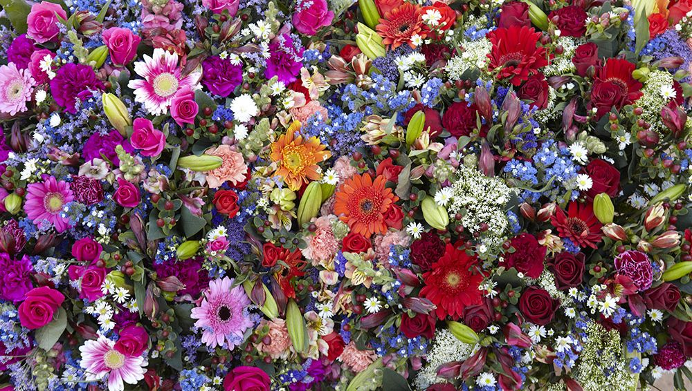

LES FLEURSEn biologie, chez toutes sortes de plantes à fleurs (angiospermes), la fleur constitue l'organe de la reproduction sexuée et l'ensemble des « enveloppes » qui l'entourent. Après la pollinisation, la fleur est fécondée et se transforme en fruit contenant les graines (ou parfois en fruits sans graines). Les fleurs peuvent être solitaires, mais elles sont le plus souvent regroupées en inflorescences. Très tôt, les fleurs ont attiré l’attention des humains, qui les utilisent et les cultivent pour la parure (couronne de fleurs), pour l’ornementation intérieure (fleurs coupées, bouquets, ikebana) et extérieure (jardins, plates-bandes, etc.). Elles sont utilisées en parfumerie, pour leurs fragrances, ainsi qu'en teinture, pour leurs pigments. Les fleurs comestibles servent à la préparation de boissons et de mets. Les fleurs ont souvent inspiré les artistes, peintres, poètes, sculpteurs et décorateurs. La culture des fleurs est la floriculture, une branche de l'horticulture. |

bouquet coloré |